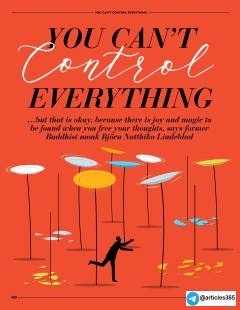

YCHayotdagi ortiqcha nazoratdan voz kechish va ichki xotirjamlikni topish bo'yicha amaliy maslahatlar.
Kitob hayotdagi barcha narsani nazorat qilib bo'lmasligini tushunish, ichki xotirjamlikni topish va stressdan xalos bo'lish yo'llarini o'rgatadi. Sobiq rohib Bjorn Natthiko Lindeblad o'z tajribasiga tayanib, fikrlarni qo'yib yuborish, empatiya va hayotga bo'lgan ishonchni oshirish haqida maslahatlar beradi.